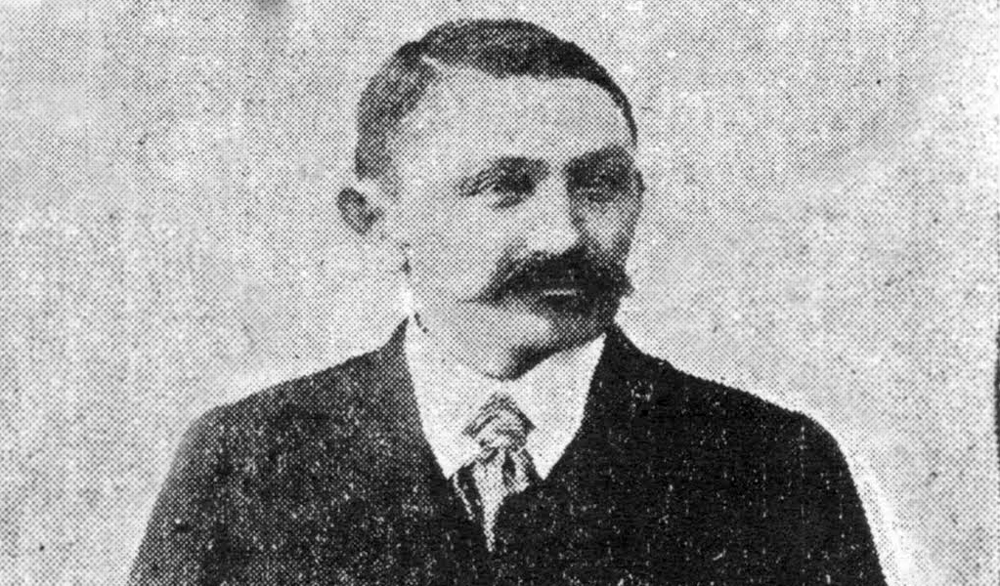
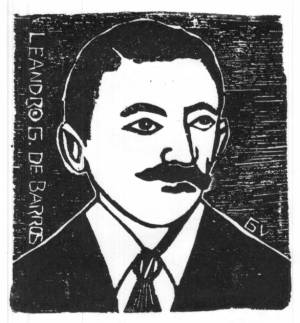
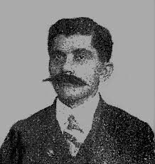

Primeiramente, para entendermos o que é o cordel, precisamos mergulhar em três tópicos de extrema importância para o surgimento dessa manifestação cultural: Definição, origem do nome e relevância cultural
O Que é o Cordel?
Cordel é uma expressão artística que combina poesia, música e xilogravura em um pequeno pedaço de papel,
algo que foi, e continua sendo, muito popular no Nordeste brasileiro.
O termo "cordel" em si deriva do português "cordão", referindo-se a maneira de
como os folhetos eram ofertados e vendidos: sendo pendurados em cordas e expostos
em feiras ou mercados.
Os poetas de cordel, conhecidos como "poetas populares", criam narrativas que refletem a cultura,
as tradições e as lutas do povo nordestino, abordando temas como o cotidiano do autor, lendas,
histórias de amor e críticas sociais por meio de uma linguagem simples e acessível para facilitar
a ingestão da literatura por todas as classes sociais.
Oposta à literatura tradicional, o cordel é uma forma de literatura oral, onde os poetas populares
recitam suas obras em voz alta, muitas vezes acompanhados de música, criando uma experiência
interativa e comunitária para todos os ouvintes.
Por ser uma forma de expressão artística popular que preserva a identidade e a memória coletiva da
região nordestina, o cordel atua como um veículo de informação, educação e entretenimento,
transmitindo valores, histórias e tradições de geração em geração de forma acessível, o que o gratificou
com o título honorável de Patrimônio Cultural Imaterial do Brasil.
Raízes e influências: De onde veio o cordel?

A literatura de cordel possui uma história rica e multifacetada com raízes que se estendem muito
além das fronteiras do nosso país.
Seu surgimento remonta às folhas volantes ou literatura de feira da Europa -
especialmente de Portugal e Espanha. Essas publicações de baixo custo, impressas em papel barato e vendidas
em mercados e feiras populares, continham histórias de heroísmo, contos religiosos, narrativas de crimes e
feitos extraordinários. Era uma forma de entretenimento e informação para as massas que não tinham acesso a
livros formais.
Com a colonização, essa tradição de narrativas impressas chegou ao Brasil, adaptando-se e ganhando novos
contornos no solo fértil da cultura nordestina.
Foi a partir do século XIX que a literatura de cordel começou a se consolidar como conhecemos hoje no Brasil.
Com a facilidade de impressão, ainda que rudimentar, e a vasta população analfabeta, o cordel se tornou uma
ferramenta essencial para a disseminação de notícias, histórias, lendas e ensinamentos, sendo lido em voz alta
para grupos de ouvintes.
As influências locais foram cruciais para moldar o cordel em sua forma única e genuína. A cultura nordestina,
com suas crenças, mitos, a seca implacável, o cangaço, as festas populares e o modo de vida sertanejo, foi
absorvida pelos poetas-cordelistas e transmutada em versos. As paisagens áridas, a fé inabalável do povo e a
capacidade de rir das próprias desgraças se tornaram temas recorrentes, dando ao cordel uma identidade inconfundível.
Assim, o cordel não é apenas uma herança europeia adaptada; é um espelho da alma nordestina, uma síntese perfeita
entre a tradição escrita e a oral, que continua a encantar e informar gerações.
Os primeiro passos no Brasil: Principais pioneiros e cidades-chave
Pioneiros do movimento cordelista no Brasil
O florescimento do cordel no Brasil deve muito à visão e talento de alguns poetas que se tornaram os pilares desse movimento. Entre eles, o nome de Leandro Gomes de Barros (1865-1918) brilha com destaque.
Leandro Gomes de Barros
 
Considerado o "pai do cordel brasileiro", Leandro foi um poeta prolífico e um visionário, responsável por popularizar a forma,
os temas e a linguagem que se tornariam marcas registradas do gênero.
Seus folhetos, que versavam sobre amor, humor, política e
lendas, conquistaram leitores por todo o Nordeste.
Deixou um legado de mais de mil folhetos, alguns dos quais se tornaram clássicos atemporais, como "O Cachorro dos Mortos",
"O Testamento do Diabo" e "A História de Zé Limeiro", dos quais muitas vezes abordavam temas como
amor, humor, política e lendas locais.
Sua contribuição para a cultura popular brasileira é imensurável, pavimentando o caminho para incontáveis poetas e garantindo que a
voz do povo continuasse a ser ouvida através da magia do cordel.
Leandro Gomes de Barros não foi apenas um poeta, mas um verdadeiro mestre da palavra cantada, um guardião das tradições e um
propagador da imaginação popular.
João Martins de Athayde

Outro nome fundamental é o de João Martins de Athayde (1905-1959).
Athayde não apenas continuou a obra de Leandro após sua morte, adquirindo seus direitos e acervo, mas também expandiu a produção
e a distribuição dos folhetos, consolidando a indústria do cordel e garantindo que as histórias em versos chegassem a um público
ainda maior.
Sua contribuição vai além da poesia; ele foi um empreendedor cultural que percebeu o potencial do cordel como veículo de informação,
entretenimento e arte. João Martins de Athayde não só escreveu inúmeros cordéis, mas também garantiu que a voz dos poetas
populares chegasse a milhões de leitores, perpetuando a tradição e o encanto dessa rica forma de expressão literária.
Ele é um pilar fundamental na edificação e disseminação do cordel no Brasil.
Cidades-chave para o florescimento do cordel no Brasil
Essas cidades, cada uma a seu modo, foram cruciais para que o cordel não só nascesse, mas se desenvolvesse, se popularizasse e se estabelecesse como uma das mais ricas manifestações culturais do Brasil.
Recife, Pernambuco
Recife se estabeleceu como o grande centro editor e distribuidor do cordel no Brasil.
Sua importância estratégica, como capital de Pernambuco e um dos principais portos do Nordeste, facilitou a chegada de papel e
a aquisição de equipamentos de impressão. Além disso, a cidade possuía uma infraestrutura de comunicação e transporte mais
desenvolvida, o que era crucial para a distribuição dos folhetos para outras regiões.
João Martins de Athayde foi um dos cordelistas que montou sua tipografia em Recife, transformando a cidade no coração comercial
do cordel, de onde os folhetos eram produzidos em massa e enviados para todo o país.
A capital pernambucana se tornou um ponto de encontro de poetas, impressores e vendedores.
Juazeiro do Norte, Ceará
Juazeiro do Norte é indissociavelmente ligada à figura do Padre Cícero Romão Batista e ao fenômeno da religiosidade popular.
A cidade recebia e ainda recebe milhares de romeiros de todo o Nordeste, o que criou um mercado consumidor gigantesco para os
folhetos.
Muitos cordéis abordavam temas religiosos, milagres e a própria vida do Padre Cícero, sendo vendidos nas feiras e romarias
como lembranças e fontes de fé. Essa intensa movimentação de pessoas e a forte devoção popular fizeram de Juazeiro um polo
vital para a comercialização e a temática religiosa do cordel.
Pombal, Paraíba
Pombal ganha destaque por ser a terra natal de Leandro Gomes de Barros, considerado o pioneiro e um dos maiores
nomes do cordel.
Embora Leandro tenha se mudado para outros centros, sua origem em Pombal simboliza o nascimento de uma tradição que se espalharia.
A cidade, e o interior da Paraíba em geral, foi um berço fértil para a emergência de poetas com talento inato para a oralidade e
a narrativa, características essenciais para o cordel. A tradição oral das cantorias e desafios já era forte na região, servindo
de base para o desenvolvimento do cordel escrito.
Patos, Paraíba
Assim como Pombal, Patos e o sertão paraibano foram importantes por nutrir e revelar muitos dos primeiros cordelistas.
A região, com suas peculiaridades culturais e sociais, ofereceu um vasto repertório de histórias, personagens e cenários que se
tornaram a matéria-prima dos folhetos.
A forte presença de cantadores, repentistas e violeiros nas feiras e festas populares facilitou a transição da poesia oral para
o formato impresso, contribuindo para a proliferação do cordel.
Campina Grande, Paraíba
Campina Grande, outra cidade paraibana de grande porte, funcionou como um centro de convergência e irradiação do cordel,
similar a Recife em uma escala menor para o interior.
Sua importância como polo comercial e cultural no interior do Nordeste atraiu poetas e vendedores.
A cidade, com suas feiras movimentadas, era um local propício para a venda dos folhetos e para o intercâmbio entre cordelistas e
leitores. Sua localização estratégica a tornava um ponto de conexão entre o litoral e o sertão, ajudando na distribuição e na
visibilidade do cordel.
O cordel hoje: Legado e continuidade
O cordel, essa joia literária nascida no coração do Nordeste brasileiro, transcendeu o tempo e as transformações sociais para se manter vibrantemente relevante em pleno século XXI. Longe de ser apenas uma relíquia do passado, ele pulsa com uma energia renovada, consolidando-se como um patrimônio imaterial de valor inestimável para o Brasil.
Cordel como patrimônio cultural imaterial
A importância do cordel como patrimônio imaterial reside em sua capacidade única de contar histórias, preservar a memória popular,
transmitir valores e, ao mesmo tempo, servir como um espelho das realidades sociais.
Seus versos rimados e sua linguagem acessível são um elo direto com as raízes culturais do povo brasileiro, refletindo suas crenças,
lutas, alegrias e o rico imaginário.
É uma forma de arte que educa, diverte e emociona, garantindo que a voz e a sabedoria popular nunca se calem.
O reconhecimento oficial como patrimônio pelo Instituto do Patrimônio Histórico e Artístico Nacional (IPHAN) em 2018 apenas
chancelou o que o povo já sabia: o cordel é um tesouro nacional.
Novas gerações e adaptações contemporâneas
O legado do cordel não se limita aos clássicos de Leandro Gomes de Barros ou João Martins de Athayde.
Uma nova safra de cordelistas, com criatividade e paixão, está garantindo a continuidade e a adaptação do gênero aos tempos atuais.
Esses novos talentos não só mantêm viva a tradição da métrica e da rima, mas também exploram temas contemporâneos, como tecnologia,
questões ambientais, diversidade, grandes eventos esportivos e até mesmo fenômenos da cultura pop.
O cordel digital, disseminado em redes sociais e plataformas online, é um exemplo claro dessa adaptação, alcançando um
público mais jovem e expandindo suas fronteiras.
Escolas, universidades e projetos sociais também têm incorporado o cordel como ferramenta pedagógica, mostrando sua
versatilidade e relevância.
Festivais e eventos de cordel na atualidade
A efervescência do cordel é visível nos inúmeros festivais e eventos que acontecem por todo o Brasil, celebrando e promovendo essa
manifestação artística. De grandes capitais a pequenas cidades do interior, feiras de cordel, recitais, oficinas de xilogravura
(arte tradicionalmente associada às capas dos folhetos) e concursos de poesia são realizados anualmente.
Eventos como a FLIC - Feira Literária Internacional do Cordel (ocorre em diversas cidades, como Fortaleza e João
Pessoa), o Festival de Cultura Popular e Cordel em Pernambuco e as inúmeras festas juninas que dedicam espaços ao
cordel são exemplos de como a cultura cordelista está sendo ativamente celebrada e transmitida.
Esses encontros não só reúnem poetas, pesquisadores e entusiastas, mas também atraem novos admiradores, garantindo que as histórias
em versos continuem a ser contadas, lidas e, acima de tudo, vivenciadas.
Assim, o cordel se prova não apenas como um elo com o passado, mas como uma forma de expressão dinâmica e resiliente, pronta para
continuar encantando e inspirando as futuras gerações.
Ele é um testemunho vivo da riqueza cultural brasileira e da capacidade de sua gente em transformar a palavra em arte.